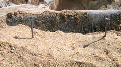

Le ET/PT est diffusé sur la chaîne de télévision américaine Fox un document
intitulé Théorie de la Conspiration : Avons-nous été sur la Lune
? réalisé par Craig Tipley de Hollywood's Nash Entertainment.
avec l'aide d'une technologie extraterrestre (retro ingéniérie d'appareils extraterrestres ou collaboration)
Brian, William ("Bill") : Moongate, 1982
on ne nous a pas montré la réalité Childress, David: Extra-Terrestrial
ArcheologyLheureux, P.:
par omission : tout ne nous a pas été montré (transmissions coupées, films et photos secrets, tels ceux de
la prétendue mission Apollo 20.
par altération : les photos et/ou les films ont été retouchées.
par remplacement : tout ou partie des photos/films ont été tournés à l'avance (dans un désert ou en
studio) et tout ou partie de l'alunissage réel sont restés secrets.
La NASA
Suite à l'émission de la Fox, la NASA reçoit divers courriers, dont des professeurs qui
ne savent pas trop quoi répondre à leurs élèves Bob Jacobs, NASA. Elle répond le Lundi
suivant sur son site Web : Oui, nous l'avons faitNASA, 2001-02-19"NASA debunks
moon landing hoax conspiracy", CNN.com/Space. Sarah Keegan, porte-parole de la NASA, déclare que D'une certaine manière, débattre (avec les théoriciens de la
conspiration) est une insulte aux milliers d'ingénieurs, scientifiques et ouvriers qui ont travaillé durant
plus d'une décennie sur le programme Apollo et ses précuseurs.
En dehors de confirmer que les alunissages ont bien eu lieu, elle refuse de faire plus de commentaires "Astronomers mock
Fox show about moon fakery", USA Today, 2000-02-15.
Les pours
Divers arguments appuient la véracité de l'alunissage d'Apollo
11.
Les témoins
Des centaines, voire des milliers d'employés du programme spatial auraient dû être dans le secret, et l'aurait
gardé jusqu'à leur mort Van Bakel 1994-09.
363 kg de minerai ont été rapportés de la Lune
Des géologues du monde entier ont examiné ces extraits pendant 30 ans, et concluent que les roches, formées en
l'absence d'oxygène et d'eau, n'ont pu être récupérées ou confectionnées sur Terre. Une discussion avancée de
l'analyse des extraits de la Lune d'Apollo est disponible
sur le site de l'Institut Lunaire et PlanétaireNASA.
Un discours était prévu en cas de désastre lunaire
Ce discours Safire, Bill : "In
The Event of Moon Disaster", 18 juillet 1969, qui a été rendu public plus tard, n'aurait pas
été préparé sans que ces hommes ne soient vraiment allés sur la Lune.
Confirmation
Comparaison d'une photographie d'Apollo 15 et des données
3D de la sonde Sélène
En la sonde japonaise Selene obtient des preuves photographiques des atterrissages
lunaires, en comparant l'image sur la gauche (de l'atterrissage d'Apollo
15) prise à ses propres images de terrain 3D. Elles concordent parfaitement Rundle, Michael: "11
Proofs That The Apollo Moon Landings Were NOT Fake", The Huffington Post, 2014-07-18.
La video de NVIDIA montrant la recréation des images d'Apollo, comparées aux orginales.
En , à l'occasion de la sortie de leur nouvelle carte graphique MAXWELL GEFORCE GTX 950,
NVidia publie une video montrant leur technologie à l'œuvre : une recréation des images d'Apollo, calculées
numériquement. Les images sont identiques à celles diffusées par la NASA, montrant
ainsi qu'elles étaient fidèles à la réalité. Au passage, nombre de questionnements de ces images (absence
d'étoiles, éclairage des astronautes, etc.) sont expliqués "Un
constructeur de carte vidéo s’attaque aux théories conspirationnistes d’un faux atterrissage sur la lune", Guru Meditation, 2014-09-21.
Les "contre"
Un an après Apollo 11, lorsque Knight
Newspapersl'un des deux groupes qui fusionneront pour former Knight-Ridder
Inc. interroge 1721 citoyens américains, plus de 30 % des personnes interrogées déclarent avoir des
doutes quant aux voyages de la NASA sur la Lune. Le , un article
de Newsweek rapporte les résultats du sondage, citant une femme d'un certain âge en Philadelphie
qui pensait que l'allunissage avait été tourné dans un désert d'Arizona et une femme au foyer de Macon
(Georgie) qui se demandait comme un poste de télévision qui ne pouvait capter les stations de New York pouvait capter
les signaux depuis la Lune ! La plus grande incrédulité, d'après Newsweek, apparu dans un
guetto de Washington (DC) où plus de la moitié des personnes interrogées doutaient de l'authenticité de la promenade
de Neil A. Armstrong. C'est un effort délibéré de masquer les problèmes chez soi,
explique un pasteur de la ville. Les gens ne sont pas heureux - et ceci les éloigne de leurs problèmes.
Sondage ou non, même James E. Oberg, grand défenseur de la NASA, pense raisonnablement que le nombre de sceptiques américains peut se compter entre
10 et 25 millions Van Bakel 1994-09.
Cette idée de canular de la conquête spatiale aura la vie dure et ne sera pas l'apanage de la Lune, avec
la sortie du film Capricorn One de Peter Hyams, relatant l'histoire d'un voyage sur Mars filmé sur
Terre.
En , le contexte d'une tension croissante sur l'invasion de l'Ukraine par la Russie, et un mois
après que le FBI ait lancé une enquête pour corruption sur l'attribution de la Coupe du
monde 2018 à la Russie, Vladimir Markin écrit dans un éditorial "Russian
Official Proposes International Investigation Into U.S. Moon Landings", The Moscow Times, 2015-06-15
que puisque les USA s'arrogent le droit d'être les arbitres du football international, une commission internationale
devrait aussi enquêter sur les missions spatiales historiques, dont les premières missions lunaires américaines :
Nous ne prétendons pas qu'ils n'y sont pas allé [sur la Lune], et qu'ils n'ont fait que faire un film. Mais tous
ces scientifiques — voire culturels — font partie de l'héritage de l'humanité, et leur disparition sans laisser de
trace est une perte pour tout le monde. Une enquête dira ce qui s'est passé."
Ombres contrariées
Ombres contrariées
Ces ombres contrariées font penser à une retouche d'images. La Terre se trouvant "à poste fixe" dans le ciel
lunaire, elle se trouvait très haut dans le ciel lunaire (ce sont les coordonnées des sites d'alunissages qui
déterminent cette hauteur). Donc si le clair de terre du "dernier quartier terrestre" est capable de déboucher les
ombres comment se fait-il que l'on voie tant d'ombres partout ?

Le même phénomène reproduit par les ombres de 2 clous Claude Peguet
En fait le sol sur lequel évoluent les astronautes n'est pas plat. L'ombre de l'un se projette sur une pente
descendante et l'autre sur une pente montante.
Éclairages multiples
On constate sur des photos que les côtés et arrière des astronautes sont aussi éclairés que leur avant.
Cela suggère un éclairage secondaire puissant, dont les astronautes ne disposaient pas. Aucune des photos des
missions Apollo n'ont été prises au moment de la "pleine terre" mais au moment (à quelque chose près) du dernier
quartier de la Terre. Comment expliquer cette source lumineuse qui éclaire (entre autre) parfaitement l'intérieur
du petit sas de sortie du LEM et en créant (entre autre également) une zone d'ombre sur la paroi externe coté
droit de ce sas ? La Terre ? Impossible, elle est là-haut dans le ciel. Le scaphandre de l'astronaute qui prend la
photo ? Impossible, la direction de la source lumineuse n'est pas dans le même axe que la prise de vue.
En fait la Terre réfléchit 40 fois plus de lumière vers la Lune que la Lune vers la Terre. Quand les photos sont
prises à la "pleine Terre" (par analogie à la pleine Lune), non seulement la Terre renvoie beaucoup de lumière,
mais en plus le Soleil et la Terre se trouvent dans des zones du ciel très éloignées l'une de l'autre. Ce qui veut
dire que lors des photos à contre-jour, la Terre était probablement le projecteur qui a débouché les ombres.
Ajoutez à ça la réflexion sur le sol lunaire et les objets et scaphandres.
Décors ?
Sur certaines photos, on voit comme une séparation linéaire entre l'avant plant net et un arrière-plan flou,
comme on le verrait si des effets spéciaux avaient tenté de recréer un décor avec des techniques de matte
paintingVan Bakel 1994-09Kaysing.
Absence de cratère
Le moteur hypergolique du module Lunaire a une poussée de 5000 kg. Comment se fait-il que l'on observe pas sous
lui de cratère formé par son atterrissage ? Van Bakel : "The Wrong
Stuff", 1994-09 — Article très fouillé sur les théories
de "canular lunaire" prévalant sur Internet et dans le folklore
américain : Alternative 3, Bill Kaysing,
Ralph Rene, movie portrayals de canulars lunaires et une réponse des
responsables de la NASAKaysing
En fait les astronautes ont réduit la puissance des moteurs pour un atterrissage en douceur Plait, P.: "Fox TV and
the Apollo Moon Hoax", Bad Astronomy, 13 février 2001.
Drapeau "flottant sans vent"
Armstrong et Aldrin le 20 Juillet 1969
Le les astronautes Armstrong et Edwin E. Aldrin de Apollo 11 érigent un drapeau américain sur la Lune, incliné et
ondulant. Comment est-ce possible ? Après tout, il n'y a pas de vent sur la Lune.
En fait ce drapeau est maintenu par des tiges solides Plait, P. : "Fox TV and
the Apollo Moon Hoax", Bad Astronomy, 13 février 2001.
Absence d'étoiles
Depuis la Terre, nous facilement voyons des étoiles, et ceci en dépit de handicaps tels que les lumières de la
ville qui nous aveuglent ou une atmosphère qui diffuse leur lumière. Or, sur les photos prises depuis la surface
de la Lune, où ces handicaps n'existent pas (il n'y a pas d'atmosphère), on ne voit pas d'étoiles Van Bakel 1994-09Kaysing. Pourquoi ?
En fait, il ne faut pas oublier que ce sont des photos que nous regardons, pas ce qu'ont vu les astronautes de
leurs yeux. Des photographies dans les mêmes conditions (jour, heure, atmosphère) ne donneront pas le même
résultat en fonction de différents paramétrages tels que le temps d'exposition.
Les astronautes marchaient sur la Lune lors du jour lunaire, lorsque sa surface lumineuse brillait et lorsque les
étoiles étaient naturellement masquées, car trop fines pour être vues sur photographie Plait, P. : "Fox TV and the Apollo Moon Hoax", Bad Astronomy, 13 février 2001.
Taille variable de la Terre
L'image de la Terre, sur les photos Apollo, apparaît petite
ou grande selon les cas.
En fait comparer le diamètre apparent de la Terre vu sur les photos lunaires n'a aucun sens : tout dépend de la
focale de prise de vues. Pour s'en convaincre, il suffit de pratiquer une petite expérience avec un appareil photo
du commerce équipé d'un zoom : prendre 2 photos de la lune, une en position "grand-angle", l'autre en position
"télé", puis comparer les 2 tirages obtenus. Naturellement, sur les deux photos, le diamètre apparent de la lune
sera différent. Etrange, non ? Non. Simplement, c'est la même lune, mais prise avec des focales différentes.
Rochers dépoussiérés
La poussière lunaire ne recouvre pas les rochers photographiés.
Nous sommes habitués à voir "flotter" la poussière parce qu'elle baigne dans l'air que nous respirons. Cette
lenteur associée à divers effets de capillarité et de tension de surface explique que la poussière peut se coller
partout. Sur la Lune, il n'y a pas d'air. Pas de capillarité ni de tension de surface. Le moindre grain de
poussière est animé d'une accélération de 1,62 m/s2 (1/6 de la gravité terrestre), tout comme un caillou ou un
astéroïde. C'est dire qu'au bout de de chute, le moindre grain de poussière a déjà acquit une
vitesse d'environ 50 km / h tout en continuant d'accélérer ! Inutile de dire qu'il lui est alors difficile de se
fixer sur un rocher : avec la vitesse, au moment de l'impact, le grain de poussière est amené à rebondir.
Autres sources de lumière
Des lumières bizarres, comme des projecteurs de studio ou
des ovnis, sont visibles sur certaines photos.
Une source de lumière quasi ponctuelle (le Soleil) produit immanquablement un reflet spéculaire sur les lentilles
de l'objectif, même avec un bon traitement anti-reflets (et les lentilles Carl Zeiss des appareils Hasselblad
lunaires disposaient d'un excellent traitement). Ces reflets se traduisent à l'image par des taches lumineuses
ressemblant à des projecteurs ou des ovnis, mais ce ne sont que des mirages.
La fusée transportant la mission Apollo 11 a décollé de
Cap Canaveral devant des centaines de personnes (et des centaines de milliers devant la télévision)
La fusée aurait été dirigée en mer polaire, largué l'équipage, et se serait écrasée KasingVan Bakel 1994-09.
La fusée a bel et bien emmené les astronautes vers la Lune.
Le retour de l'équipage en capsule avec amérissage dans le Pacifique a été filmé Van Bakel 1994-09.
l'amerrisage ne prouve pas qu'ils soient allés sur la Lune, mais seulement qu'ils étaient dans l'Espace.
L'équipage et le module de commande auraient été placés dans un avion militaire et largués dans le Pacifique
pour récupération par un avion de transport. Un pilote de ligne, lors d'un vol San Francisco-Tokyo, aurait vu le
module Apollo 15 largué depuis d'un avion-cargo non-identifié, mais
déclare ne pouvoir donner le nom du capitaine ou de la ligne aérienne KasingVan Bakel 1994-09.
Les astronautes sont bel et bien revenus de la Lune.
Les Soviétiques n'ont pas contesté la victoire américaine de la course à la Lune.
Le président Nixon a arrangé les ventes de farines de blé en de termes
étonnamment généreux pour acheter le silence des Russes TipleyPlait, P.: "Fox TV and
the Apollo Moon Hoax", Bad Astronomy, 13 février 2001.
Si les Américains n'avaient pas été sur la Lune, les Soviétiques ne se seraient pas privés de le dire
Des stations de télémétrie terrestres (Plateau de Calern, en France par exemple)
émettent une lumière monochromatique en direction de réflecteurs lunaires, dont le 1er a été installé
par la mission Apollo 11, pour mesurer la distance Terre-Lune avec une incertitude de quelques cm.
Ces réflecteurs ne sont pas allés tous seuls sur la Lune.
L'appareil photo de Armstrong était monté à hauteur de sa poitrine. Pourquoi alors une photographie de Aldrin
par Armstrong semble prise d'au-dessus d'Aldrin et peut-on voir le dessus de sa tête ?
La NASA a été assez stupide pour ne pas penser à ce détail en fabriquant des
fausses photos.
Le sol se lequel ils se trouvent n'est pas plat. Armstrong se trouvait un peu plus haut d'un plan incliné, et
était donc plus haut que Aldrin.
Les températures sur la Lune atteignent 280 °F.
Cela aurait-il dû cuire le film photographique jusqu'à frire. Donc le film n'a pas été pris sur la Lune.
280 °F est effectivement très chaud, mais est une température maximale, atteinte à la surface de la Lune
durant le long jour lunaire (2 semaines). Les missions Apollo furent prévue pour avoir lieu durant les matins
lunaires où les températures sont plus clémentes. De plus le film était soit dans la caméra soit dans le module,
tous deux conçu pour réfléchir le maximum de chaleur, contrairement au sol lunaire. Enfin, comme il n'y a pas
d'air, il n'y a ni température ambiante ni chaleur par convection sur la Lune.
Des photographies montrent des ronds lumineux dans le ciel. De quoi s'agit-il ?
La NASA a été assez stupide pour publier des photos où apparaissent, soit des spots
d'éclairage, soit des vaisseaux extraterrestres (selon la théorie de conspiration)
Il s'agit d'un effet photographique courant nommé lens flare. Ils sont causés par une lumière
brillant dans les lentilles et se réfléchissant à son intérieur puis sur le film. On peut en trouver des
exemples dans des photos sur Terre également.
Qui a filmé le module décollant de la surface de la Lune ?
Le décollage a été filmé de la Terre et la NASA a été assez stupide pour oublier
qu'il ne devrait y avoir plus personne pour filmer le départ.
Le film fut pris par un appareil controllé à distance, monté sur le rover lunaire laissé sur place. Ils
savaient exactement à quelle vitesse le module monterait, et savaient donc à quelle vitesse le suivre
verticalement. Cela pouvait être fixé à l'avance et déclenché à distance depuis la Terre.
Des croix d'objectifs disparaissent derrière des objets (Jeep, etc.)
Les jeeps sont devant un décor sur lequel des croix ont été peintes ? Que des gens ont été chargés de rajouter
des croix après que les clichés ont été pris ? Pour quoi faire (on ne pouvait pas mettre une plaque transparente
avec des croix dans un studio ?).
Il n'y a pas que derrière les jeeps que disparaissent les croix. Derrière tous les objets blancs, en fait.
C'est tout simplement de la surexposition : quand les minces traits noirs dessinés sur la plaque de l'appareil
sont devant une zone fortement lumineuse, ils ont tendance à disparaître. Ca se produit sur de nombreuses
photos, et pas que sur la Lune (voir par exemple cette
image de navette spatiale).
Sur une image de Apollo 12, l'un des astronautes tient en main un
objet. Mais en regardant de plus pres a un endroit, on voyait à travers le tube métallique, il manquait un
morceau du manche
Trucage évident.
Ça peut sembler étonnant effectivement quand on regarde une image en moyenne résolution, et surtout sans
commentaire. Quel est cet objet ? Un récipient pour recueillir des échantillons de sol lunaire. Quel est la
partie inférieure de cet objet ? Le couvercle. Il suffit de regarder l'image haute résolution sur
le site de la NASA pour constater que ce dernier est relié au receptacle par un mince
filin.
Une photo montre Aldrin (à gauche) et Armstrong simulant leur mission à l'intérieur d'un bâtiment.
Toute la mission a été filmée comme ça.
Cette photo a été prise lors d'un exercice d'entraînement le .
D'autres partisans d'un complot lunaire iront jusqu'à harceler les astronautes, tel Bart Sibrel, dont les arguments
seront également réfutés "Bart Sibrel's top
fifteen", Clavius.
Cependant, les critiques de ces photos à la surface de la Lune passent sous silence l'ensemble des autres photos et
films montrant l'alunissage ou le redécollage du module lunaire Apollo Flight Journal - Video index, NASA.
Au-delà d'Apollo
Les Mythbusters démontant par l'expérience différentes théories de complot lunaire
Au-delà des photos et films de l'alunissage de la mission Apollo 11, il
existe bien d'autres sujets de contestations quant à la Lune. D'autres sondes, comme Clémentine sont allées explorer
notre satellite naturel et nous ont transmis des documents.
Clémentine
Certaines photos de cratères lunaires semblent étranges. Sur l'une d'elles en particulier, on voit assez
nettement une espèce de gellule qui fait plusieurs centaines de mètres de long.
Pourquoi la sonde Clementine a-t-elle une si faible résolution ? On sait faire des satellites espions qui
peuvent détecter un être humain. De plus la Lune n'a d'atmosphère, ce qui facilite d'autant la tâche.


 Des lumières bizarres, comme des projecteurs de studio ou
des ovnis, sont visibles sur certaines photos.
Des lumières bizarres, comme des projecteurs de studio ou
des ovnis, sont visibles sur certaines photos.
{kind=link}
{kind=link}